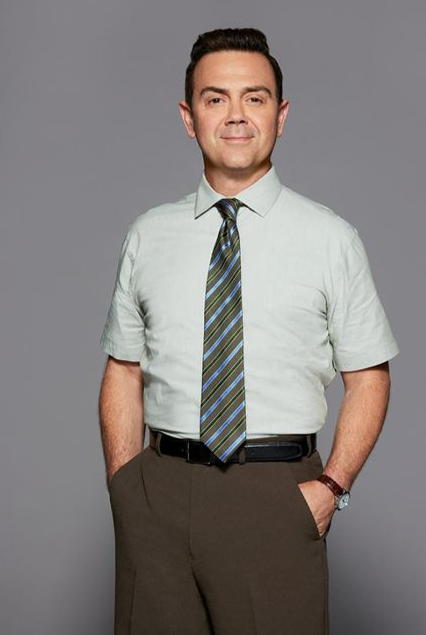

Joseph Vincent Lo Truglio ( nascido em 2 de dezembro de 1970) é um ator, comediante, escritor e produtor americano. Mais conhecido por seu papel como Charles Boyle no seriado da Fox / NBC Brooklyn Nine-Nine , ele também foi membro do elenco das séries de televisão The State e Reno 911! . Seus papéis notáveis no cinema incluem Wet Hot American Summer , I Love You Man , Superbad , Paul ,Modelos e Wanderlust .
Lo Truglio escreveu e atuou em várias esquetes para The State , e segmentos animados para o show. Depois que The State terminou em 1995, ele fez várias aparições ao longo do final da década de 1990 em programas como Viva Variety , Upright Citizens Brigade , Law & Order e Third Watch .
Em 2001, Lo Truglio apareceu no filme de comédia do ex- aluno do Estado David Wain , Wet Hot American Summer , onde interpretou um conselheiro do acampamento. Ele fez aparições na série de shorts Stella online de David Wain', Michael Showalter' e Michael Ian Black .
Ele apareceu no show Stella de 2005 no Comedy Central e teve uma participação especial no filme de Showalter, The Baxter . Ele fez participações especiais no Reno 911! , bem como no filme de 2007, Reno 911!: Miami . Ele forneceu sua voz para vários videogames, incluindo The Warriors . Em 2005, ele forneceu a voz de Vincenzo 'Lucky' Cilli em Grand Theft Auto: Liberty City Stories . Em 2006, ele teve um papel coadjuvante na Beer League de Artie Lange .
Lo Truglio apareceu em vários comerciais de televisão, incluindo anúncios para Gateway Computer , Jack Link's Beef Jerky e um antigo anúncio Crispy Pop
Ele interpretou "Francis the Driver" na comédia de sucesso de Judd Apatow Superbad e teve papéis coadjuvantes em filmes como Pineapple Express , Paul , Role Models , Wanderlust e I Love You, Man . Em julho de 2008, Lo Truglio estrelou com Bill Hader e Jason Sudeikis na websérie The Line on Crackle . Ele apareceu nos podcasts de comédia Comedy Bang Bang , Never Not Funny e Superego .
Ele interpretou "Francis the Driver" na comédia de sucesso de Judd Apatow Superbad e teve papéis coadjuvantes em filmes como Pineapple Express , Paul , Role Models , Wanderlust e I Love You, Man . Em julho de 2008, Lo Truglio estrelou com Bill Hader e Jason Sudeikis na websérie The Line on Crackle . Ele apareceu nos podcasts de comédia Comedy Bang Bang , Never Not Funny e Superego .
Ele interpretou "Francis the Driver" na comédia de sucesso de Judd Apatow Superbad e teve papéis coadjuvantes em filmes como Pineapple Express , Paul , Role Models , Wanderlust e I Love You, Man . Em julho de 2008, Lo Truglio estrelou com Bill Hader e Jason Sudeikis na websérie The Line on Crackle . Ele apareceu nos podcasts de comédia Comedy Bang Bang , Never Not Funny e Superego .
Lo Truglio apareceu na comédia Starz Party Down e também teve um papel recorrente na comédia de curta duração de 2010 da Fox , Sons of Tucson . Em 2011, ele co-estrelou a curta série de comédia da NBC , Agentes Livres , estrelada por Hank Azaria . Lo Truglio fez a voz de Freddy no American Dad! episódio "Melhor amigo de Stan". Em 2013, Lo Truglio começou a co-estrelar ao lado de Andy Samberg e Andre Braugher na série de comédia da Fox Brooklyn Nine-Nine .